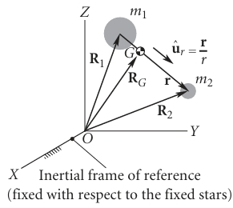
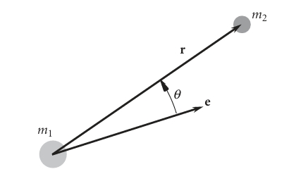
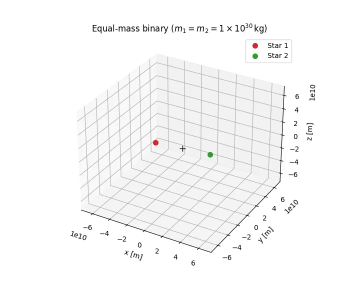

2 Two Body Problem
2.1 Equations of Motion for the Two body problem
Let \(\vec{R}_1\) and \(\vec{R}_2\) denote the position vectors of masses \(m_1\) and \(m_2\) in an inertial reference frame. According to Newton’s Second Law and the law of gravitation:
\[ m_1\ddot{\vec{R}}_1=-G\frac{m_1 m_2}{r^3} \vec{r} \tag{2.1}\]
\[ m_2\ddot{\vec{R}}_2=G\frac{m_1 m_2}{r^3} \vec{r} \tag{2.2}\]
where \(\vec{r}= \vec{R}_2-\vec{R}_1\).

2.1.1 Deriving the relative equation of motion
Substituting Equation 2.1 and Equation 2.2 to \(\vec{r}= \vec{R}_2-\vec{R}_1\):
\(\ddot{\vec{r}}= -G\frac{m_1 m_2}{r^3}\vec{r}\left(\frac{1}{m_2}+\frac{1}{m_1}\right)= -G \frac{m_1+m_2}{r^3} \vec{r}\)
Let the gravitational 𝜇 parameter be defined as:
\[ \mu= G(m_1+m_2) \]
Hence the final equation that we use turns out to be:
\[ \boxed{\ddot{\vec{r}}=-\frac{\mu}{r^3}\vec{r}} \tag{2.3}\]
2.1.2 Motion of Center of Mass
The center of mass vector is: \(\vec{R}_G=\frac{m_1\vec{R}_1+m_2\vec{R}_2}{m_1+m_2}\)
Using Equation 2.1 and Equation 2.2 :
\[ \ddot{\vec{R}}_G= \frac{m_1\ddot{\vec{R}}_1+m_2\ddot{\vec{R}}_2}{m_1+m_2} \tag{2.4}\]
\[ \ddot{\vec{R}}_G=\frac{-G\frac{m_1m_2}{r^3}\vec{r}+G\frac{m_1m_2}{r^3}\vec{r}}{m_1+m_2}=0 \]
Hence proved that the acceleration of center of mass is zero.
2.2 Angular momentum in two body problem
The angular momentum of body \(m_2\) relative to \(m_1\) is moment of \(m_2\)’s relative linear momentum \(m_2 \dot{\vec{r}}\):
\[ \vec{H}_{2/1}= \vec{r} \times m_2\dot{\vec{r}} \]
where \(\dot{\vec{r}}\) is the velocity of \(m_2\) relative to \(m_1\). We divide this equation of the mass term and get the specific relative angular momentum:
\[ \vec{h}= \vec{r}\times\dot{\vec{r}} \]
On calculating the time derivative:
\[ \frac{d\vec{h}}{dt}=\dot{\vec{r}}\times\dot{\vec{r}}+ \vec{r}\times \ddot{\vec{r}} \]
From the Equation 2.3, we see that \(\ddot{\vec{r}} \parallel \vec{r}\) . Hence \(\frac{d\vec{h}}{dt}=0 \Rightarrow \vec{h}\) is conserved.
2.2.1 Eccentricity of orbit from Laplace Runge Lenz vector
Differentiating \(\dot {\vec r} \times \vec h\):
\[ \frac{d}{dt}(\dot{\vec r}\times\vec h)= \ddot{\vec r}\times\vec h + \dot{\vec r}\times\underbrace{\dot{\vec h}}_{0}= -\frac{\mu}{r^{3}}\vec r\times(\vec r\times\dot{\vec r}) \tag{2.5}\]
Using the triple product identity \(\vec{a}\times(\vec{b}\times\vec{c})=(\vec{a}\cdot\vec{c})\vec b-(\vec a \cdot \vec b)\vec c\) :
\[ \vec r\times(\vec r\times\dot{\vec r})= (\vec r\cdot\dot{\vec r})\vec r - r^{2}\dot{\vec r} \]
And using the identity \(\vec r \cdot \dot{\vec r}=r\dot r\)(See Section 2.1 ), we get:
\[ \vec r\times(\vec r\times\dot{\vec r})= (r\dot r)\vec r - r^{2}\dot{\vec r} \tag{2.6}\]
Inserting Equation 2.6 into Equation 2.5 :
\[ \frac{d}{dt}(\dot{\vec r}\times \vec h)=- \frac{\mu}{r^3}\left[(r \dot{r})\vec r - r^2 \dot{\vec r}\right]=-\mu \left[\frac{\dot r \vec r-r\dot{\vec{r}}}{r^2}\right] \tag{2.7}\]
But ,
\[ \frac{d}{dt}\left(\frac{\vec r}{r}\right)= \frac{r\dot{\vec r}-\dot r\vec r}{r^2}=-\frac{\dot r\vec r-r\dot{\vec{r}}}{r^2} \]
substituting the above into Equation 2.7;
\[ \frac{d}{dt}\left(\dot{\vec r}\times \vec h\right)= \frac{d}{dt}\left(\mu\frac{\vec r}{r}\right) \]
Which on integration, gives this solution:
\[ \frac{1}{\mu}(\dot{\vec{r}}\times \vec h)-\frac{\vec r}{r}=\vec e \tag{2.8}\]
where \(\vec e\) is the constant of integration and called as the Laplace-Runge-Lenz Vector. The significance of this vector is that its magnitude \(|\vec e|\) gives the eccentricity \(e\) and it faces in the direction of the periapsis of the orbit.
2.3 Orbit Equation (Trajectory Under Gravity)
Equation 2.8 is the vector equation that represents the relative motion of one body wrt the other in two body problem. In order to obtain the scalar form, we take a dot product with \(\vec r\):
\[ \frac{1}{\mu}(\dot{\vec{r}}\times \vec h)\cdot \vec r-\frac{\vec r\cdot \vec r}{r}=\vec e\cdot \vec r \]
Using the identity \(\vec a \cdot (\vec b \times \vec c)=(\vec a \times \vec b)\cdot \vec c\);
\[ \frac{1}{\mu}\underbrace{(\vec r \times \dot{\vec r})}_{\vec h}\cdot \vec h- \frac{\vec r\cdot\vec r}{r}=\vec e\cdot\vec r \]
\[ \frac{h^2}{\mu}-r=re\cos{\theta} \text{ where } \theta \text{ is the true anomaly angle } \]

Hence the final equation of orbit will turn out to be as follows:
\[ \boxed{r=\frac{\frac{h^2}{\mu}}{1+e\cos{\theta}}} \]
2.4 Two body problem simulation
Below is a simulation of the two body problem with an example: a binary star system of two Suns whose masses are equal.
